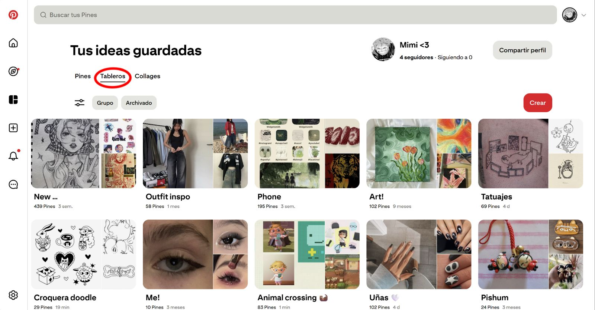
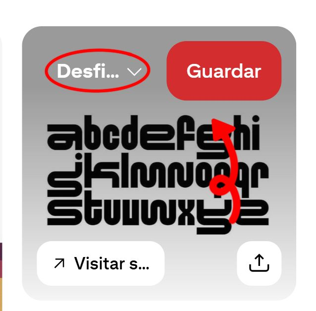
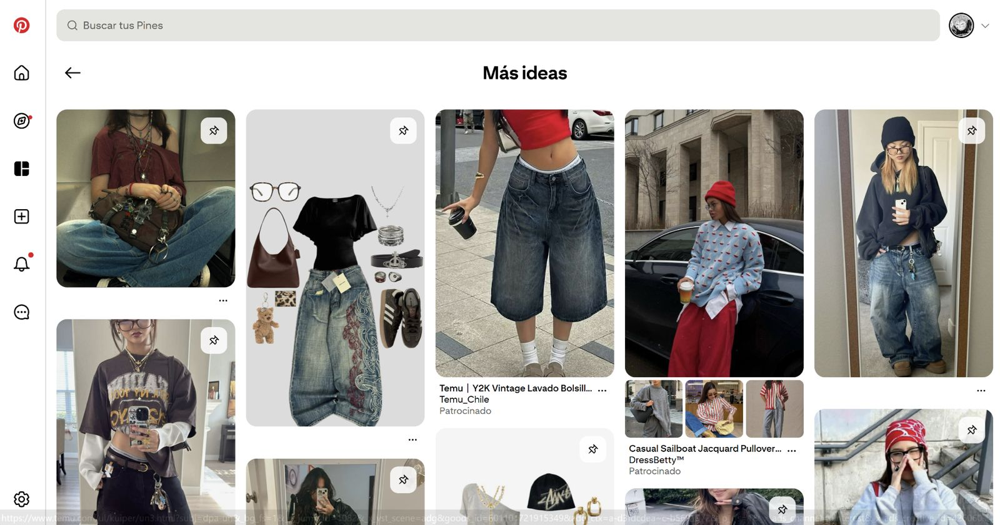
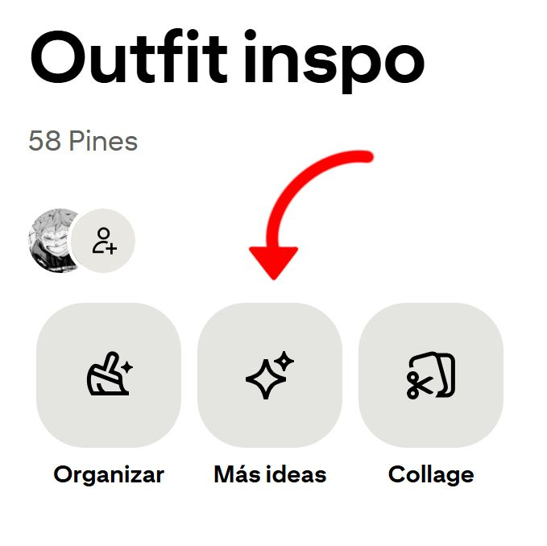

Mecanismos de almacenamiento y estructuración de intereses
De los atributos que tiene Pinterest, la manera de almacenar y estructurar tus intereses resalta sobre las otras. Pinterest ofrece fácilmente la posibilidad de guardar pins en carpetas definidas por el usuario, e intenta complementar estas carpetas con pins similares a los ya guardados. El diseño de la página permite que el guardado sea fácil y rápido, prácticamente automático, al interactuar con el pin, se genera un gran botón rojo que dice "GUARDAR" y a un lado recomienda donde debes guardarlo según tus carpetas ya creadas. Esto lleva a acumular contenido, y provoca querer volver a la aplicación, también ayuda a construir una identidad clara ya que se basa casi en su totalidad sobre los gustos del usuario. Alimenta la creatividad y la organización, ayudando a la plataforma a crear una dependencia a volver al contenido ya guardado.



